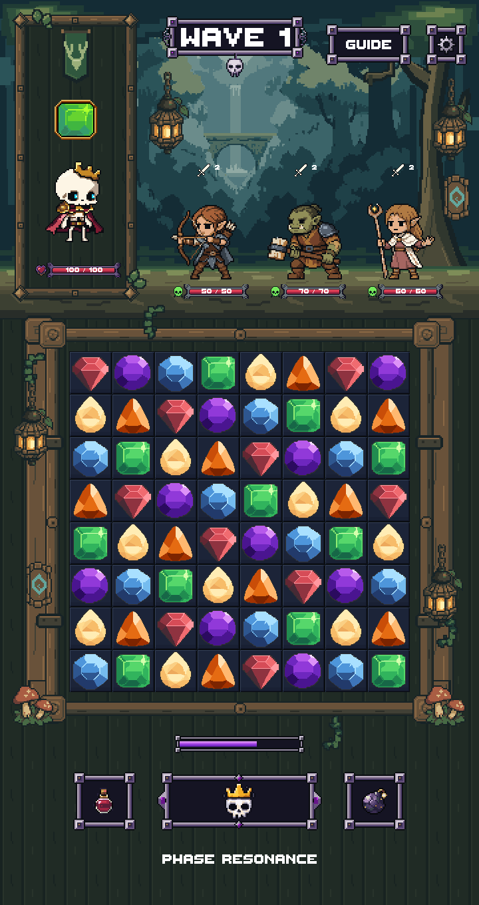
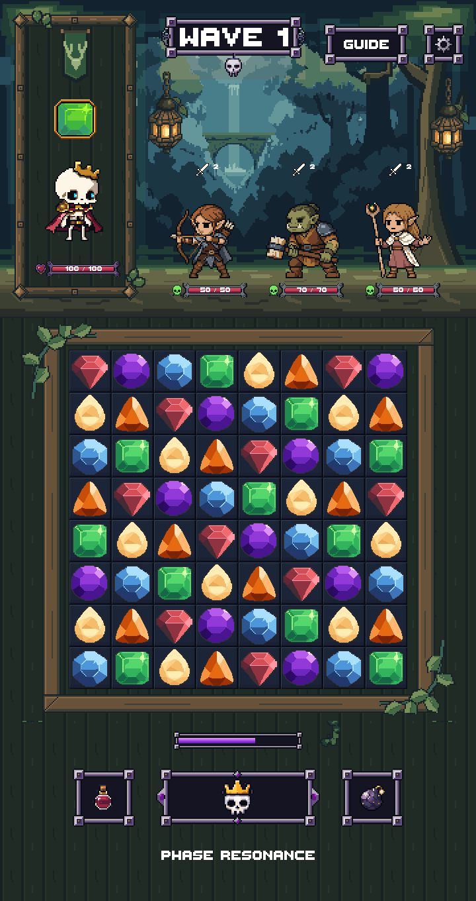
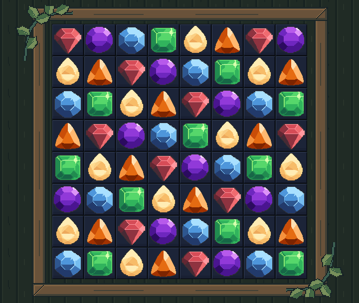
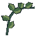
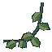
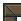

Checkpoint 1 · direction candidateA quieter woodland sanctuary
Strong timber, two connected foliage sweeps, and magic kept in the distance. This is a LibreSprite composition study using the previous Unity capture—not a new Unity or gameplay screenshot.
Before · Stage 5 Unity assembly

Proposed direction · composition study

Concentrate the plant shapesTwo connected leaf/vine accents replace scattered props. The board interior and most of the rails stay clear.
Let distance carry the magicCool layered forest, two small far lights, and upper lanterns. The flat enemy floor stays clean.
Protect the game’s hierarchyCharacters, gems, HP and the complete lower HUD remain pixel-exact. No UI layout changes.
Board framing at review size
Direction study

Native motif studies
These sketches establish larger shape grouping. Final tileable corners, independently lit lower foliage, and responsive fitting are later checkpoints.

Leaf A · native 64×64Leaf A · nearest-neighbor 4×
Leaf B · composition orientation 2×
Quiet timber joint · 6×Rendering authorities, unchanged
 Rattlebones · primary · 2×
Rattlebones · primary · 2× Farmer · supporting · 2×
Farmer · supporting · 2× Pan Villager · supporting · 2×
Pan Villager · supporting · 2×Asset decisions
| Retain | Refine after direction approval | Exclude from new assembly |
|---|
| Tree silhouettes, distant ruin, flat ground | Far values and restrained magical accents | Loose hanging rune tag |
| Board geometry, cells, gems, modular architecture | Quiet timber joints and two leaf/vine overlays | Spiral medallions, board lamps, mushrooms, extra braces |
| Portrait placement and mask; shared controls and lower HUD | Portrait motif only at its own checkpoint | Any lower-HUD redesign |
New PixelLab spend: 0. LibreSprite exports and reopened sources verified. 8,125 protected files unchanged. No Unity rebuild or merge at this checkpoint. Next approval gate: top-background blockout.